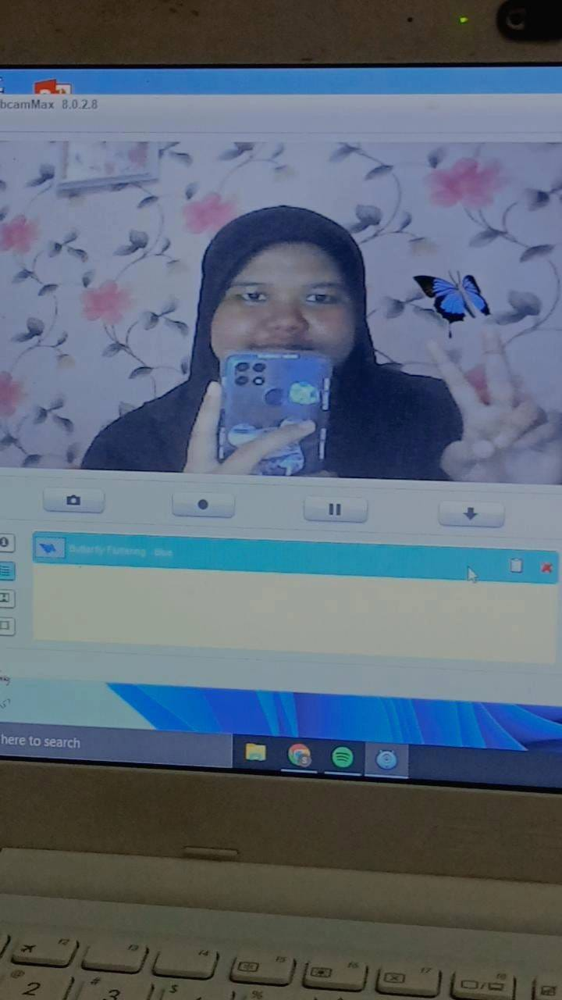

MENGENAL DIRI SAYA
NAMA : Siti Alya Nur Fajriyah

TTL : Cianjur, 14 Mei 2006
ALAMAT : Griya Maleber Indah, Karang Tengah, Cianjur
No Hp : 0819 0377 5021
CITA2 : Jaksa
KELEBIHAN SAYA : Kerja Keras, belajar dan bisa membagi waktu
KEKURANGAN SAYA : Pemalu
MOTO UNTUK MERAIH CITA2 : Raih cita cita tanpa menyerah